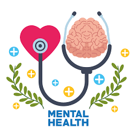
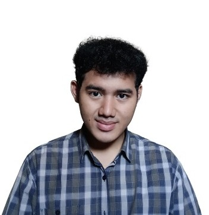
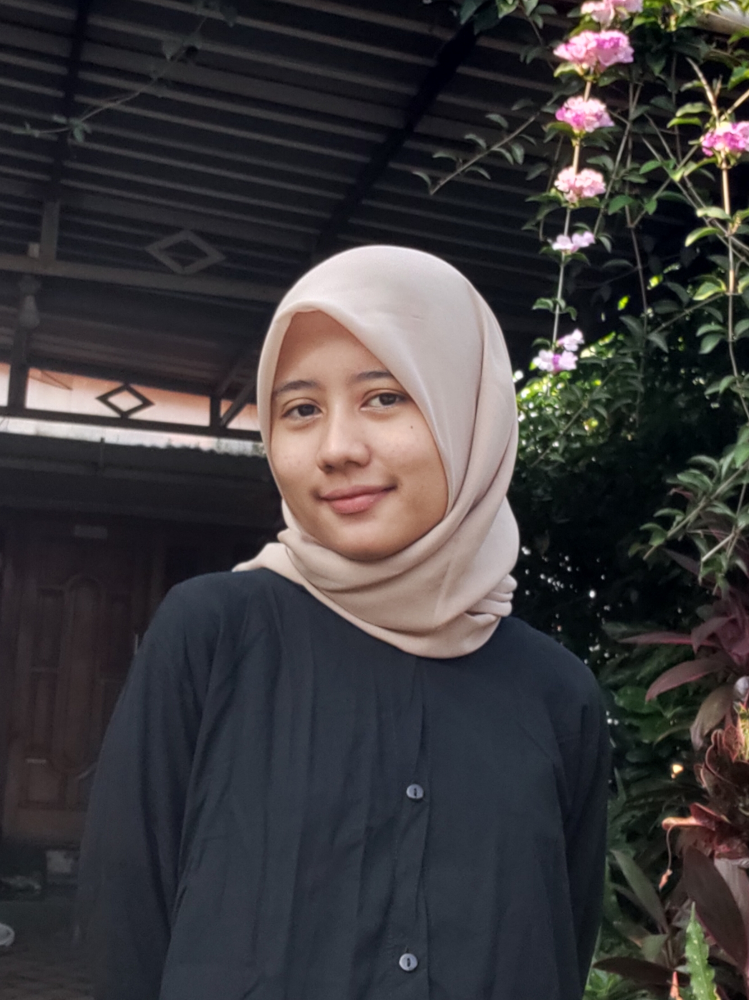

Our Story
MHEALTH - Mendukung Kesehatan Mental Anda
MHEALTH adalah sebuah situs web yang didedikasikan untuk menyediakan informasi dan dukungan terkait dengan kesehatan mental. Situs ini memiliki tujuan utama untuk meningkatkan kesadaran dan pemahaman tentang kesehatan mental, menghilangkan stigma yang terkait dengan masalah kesehatan mental, dan memberikan bantuan kepada individu yang memerlukan.
Deskripsi MHEALTH:
- Informasi Kesehatan Mental - MHEALTH menyediakan berbagai informasi tentang kesehatan mental, termasuk gangguan kesehatan mental yang berbeda, tanda-tanda dan gejalanya, serta cara mengatasi atau mengelola masalah kesehatan mental.
- Tim Ahli - Situs ini memiliki tim yang terdiri dari ahli di berbagai bidang kesehatan mental, seperti psikolog, psikiater, dan pekerja sosial. Tim ini berkomitmen untuk memberikan konten yang dapat diandalkan dan bermanfaat kepada pengunjung situs.
- Layanan Kesehatan Mental - MHEALTH juga dapat memberikan informasi tentang layanan kesehatan mental yang tersedia, termasuk panduan tentang cara mencari bantuan profesional jika diperlukan.
- Testimonial - Situs ini mungkin juga menyertakan testimonial atau pengalaman pribadi dari individu yang telah mengatasi masalah kesehatan mental mereka. Ini dapat memberikan inspirasi dan harapan kepada orang lain yang menghadapi situasi serupa.
- Paket Layanan - MHEALTH bisa menawarkan informasi tentang berbagai paket layanan kesehatan mental, termasuk yang berkaitan dengan perawatan rutin, kasus serius, dan keadaan darurat. Ini membantu pengunjung memahami pilihan perawatan yang tersedia.
- Kontak dan Dukungan - Situs ini menyediakan informasi kontak untuk mereka yang mencari bantuan atau ingin menghubungi tim MHEALTH untuk pertanyaan atau konsultasi.
- Tujuan Penghapusan Stigma - Salah satu tujuan utama MHEALTH adalah menghapus stigma yang terkait dengan kesehatan mental. Ini adalah langkah penting dalam mendorong orang untuk mencari bantuan tanpa rasa malu atau ketakutan.
- Inspirasi dan Harapan - Melalui cerita pengalaman orang lain, informasi, dan sumber daya, MHEALTH bertujuan untuk memberikan inspirasi dan harapan kepada individu yang mungkin merasa putus asa atau kesulitan dalam menghadapi masalah kesehatan mental.
Our Teams
Team O Group 29

Doni Leonardo Purba
PROJECT LEADER

Silvia Ayu Ningtyas
FRONTEND

Muhamad Zulfikar Fauzan Firdaus
FRONTEND

Noor Hayati
BACKEND

M. Zaky Diansya
BACKEND

Rida Fani Safitri Tanjung
Quality Assurance